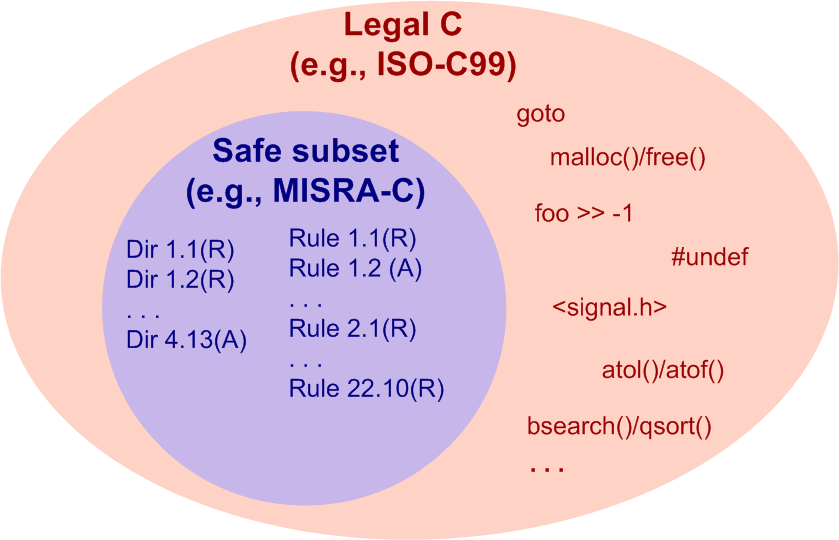

QP/C++
7.3.4
Real-Time Embedded Framework

This document (Unique Identifier: DOC-QPCPP-CSC) describes the compliance of the QP/C++ Real-Time Embedded Framework as well as the Application code based on this framework with Motor Industry Software Reliability Association (MISRA) Guidelines for the use of the C++ Language in Critical Systems [MISRA-C++17].
The revision history of the document DOC-QPCPP-CSC is as follows:
| Revision | QP/C++ version | Date (YYYY-MM-DD) | By | Description |
|---|---|---|---|---|
| 1.0 | 5.0.0 | 2018-05-30 | MMS | Initial release for MISRA-C++:2008 |
| 2.0 | 7.3.1 | 2023-12-12 | MMS | Initial release for MISRA-C++:2023 |
The About MISRA-C++:2023 coding guidelines – "Guidelines for the use of C++17 in critical systems" ([MISRA-C++17]) – were developed with the specific intention to develop a new safer C++ coding standard that would allow them to make greater use of the evolving C++ language; specifically, the modern C++11 through C++17 features.
The new MISRA-C++:2023 supersedes the existing MISRA-C++:2008 coding standard ([MISRA-C++08]), which explicitly required the use of the C++98 language version and did not allow for the modern C++ constructs to be used. This meant that developers were left with the choice of either reverting to older and more primitive versions of the C++ language, or with coding guideline rules that didn't really fit much of the new software being developed. And for safety critical software systems coding guidelines or standards are considered a key piece of the related IEC 61508 functional safety system. Thus, AUTOSAR C++ 14 was born.
In the context of functional safety standards the full C++ programming language is generally not recommended. However, safer subsets of C++, such as MISRA-C++:2023, are highly recommended, especially for higher SIL levels (see [IEC-61508-3] Table A.3, [IEC-61508-7] C.4.6 Table C.1).

The QP/C++ Framework has a long history of compliance with the safety-related coding standards. Earlier versions of QP/C++ were compliant with the MISRA-C++:2008 Standards, see [QPCPP-MCPP]. Starting with QP/C++ version 7.x, the framework was adapted for the C99 language standard and compliance with AUTOSAR-C++14 [AUTOSAR-CPP14].
| [MISRA-C++17] | MISRA C++:2023 Guidelines for the use of C++17 in critical systems ISBN 978-1-911700-10-4 (paperback), ISBN 978-1-911700-11-1 (PDF), MISRA Consortium Limited, October 2023 |
| [MISRA-C++08] | MISRA C++:2008 Guidelines for the use of C++ language in critical systems ISBN 978-1-906400-03-3 (paperback), ISBN 978-1-906400-04-0 (PDF), MISRA Consortium Limited, June 2008 |
| [MISRA-Comply] | MISRA Compliance:2020 Achieving compliance with MISRA Coding Guidelines, ISBN 978-1-906400-11-8 (PDF), MIRA Limited, February 2020 |
| [ISO-C99] | ISO/IEC 9899:1999, Programming languages — C, International Organization for Standardization, 1999 |
| [PCLP] | Reference Manual for PC-lint® Plus™ Version 2.0, A diagnostic facility for C and C++, Vector Informatik |
| [PCLP-Cert] | Using PCLP in Safety Critical Applications Version 2.0, Vector Informatik |
| [BARR-C:2018] | BARR-C:2018 Embedded C Coding Standard, Michael Barr, ISBN-13: 978-1-72112-798-6, Barr Group 2018, (https://barrgroup.com/sites/default/files/barr_c_coding_standard_2018.pdf) |
| [Saks-1998] | Dan Saks, "Programming Pointers - Placing const in Declarations", Embedded Systems Programming, June 1998, (https://www.dansaks.com/articles/1998-06%20Placing%20const%20in%20Declarations.pdf) |
| [PSiCC2] | Practical UML Statecharts in C/C++, 2nd Edition, Event-Driven Programming for Embedded Systems, Miro Samek, ISBN 978-0750687065, Newnes 2008 (https://www.state-machine.com/psicc2) |
| [QPCPP-MCPP] | Application Note: QP/C++ MISRA-C++:2008 Compliance Matrix, Quantum Leaps (https://www.state-machine.com/doc/https://www.state-machine.com/doc/AN_QP-Cpp_MISRA.pdf) |